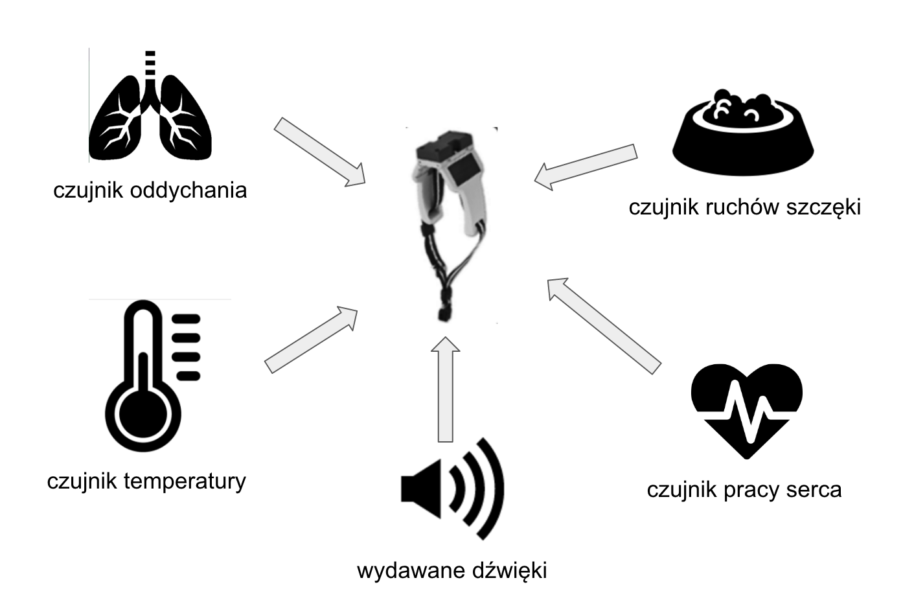

W każdej chwili sprawdź stan zdrowia najcenniejszych zwierząt
Jak to działa?
Ten system jest w pełni zintegrowany z naszym systemtem lokalizacji zwierząt. Dla najcenniejszych zwierząt możesz kupić najdokładniejszą obrożę master pro. Obroża ta posiada więcej czujników które są bardzo dokładne i przez 24 godziny na dobę badają stan zdrowia Twoich najcenniejszych zwierząt. Obroża musi być w zasięgu sieci GSM lub jednej z naszych anten, aby poprawnie działała.
Obroża master pro posiada dodatkowe autorskie czujniki: sensor przeżuwania (ruchów szczęki), czujnik oddychania, czujnik pracy serca, czujnik temperatury ciała oraz czujnik dźwięków wydawanych przez zwierzę. Wszystkie dane są w czacie rzeczywistym przesyłane do naszego serwera który cały czas analizuje stan zdrowia zwierzęcia, gromadzi dane i prezentuje je w przystępny sposób w aplikacji.
Nasz system diagnozowania potrafi z bardzo wysoką skutecznością zdiagnozować we wczesnym stadium wiele chorób. Oparty jest o algorym uczący się na ogromnej bazie wszystkich zwierząt które są w programie Smart Rolnik. Dodatkowo system powiadomi Cię od razu jeżeli stan zdrowia któregoś zwierzęcia ulegnie groźnej zmianie. Możliwe jest również automatyczne powiadomienie weterynarza o zagrożeniu życia zwierzęcia.
Koszt
Niektóre urządzenia możesz wypożyczyć na okres zamiast od razu kupować na własność. W wypadku posiadania innych systemów prosimy o kontakt w celu ustalenia indywidualnego cennika usług.| cena jednostkowa | abonament (wypożyczenie) - miesiąc | |
| Obroża master pro | 2000zł | 50zł |
| System SmartRolnik - aplikacja | - | 100zł |
| System Diagnozy stanu zdrowia - aplikacja | - | 250zł |
| Utrzymanie bazy danych (koszt na jedno zwierzę) | - | 2zł |